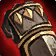
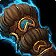

Gloves of Unfailing Faith
Gloves of Unfailing FaithGloves of Unfailing Faith148 armor, 25 stamina, 33 intellect, 25 spell damage, 75 healing powerSockets red, blueDrops from Reliquary of Souls, Black Temple
148 armor, 25 stamina, 33 intellect, 25 spell damage, 75 healing power
Sockets red, blue
Drops from Reliquary of Souls, Black Temple
What influencers say
Zatar (Classic Wow Builds)
Zatar (Classic Wow Builds) · 59:16
67k views
It depends
He says the gloves are best in slot for a holy paladin playing a full
mana-sustain set, and since the paladin tier gloves are bad he would
offer them to the paladin first, otherwise giving them to a priest for
whom they are a close second best.
Showing all 4 spec cards.
No specs are selected, so no cards are showing. Use Show every spec to bring all of them back.
Holy Paladin
Prioritynot yet decided
Constraints
No hit cap applies to this spec.
No crit cap.
Global cooldown floor at 50% spell haste, which nothing rostered reaches
from gear this phase.
Delta
Gloves of
Unfailing FaithGloves of Unfailing
Faith148 armor, 25 stamina, 33
intellect, 25 spell damage, 75 healing powerSockets red, blueDrops from Reliquary of Souls, Black
Temple in Holy Paladin
terms
| Stat | Over Tier 6, Mount Hyjal Lightbringer GlovesLightbringer Gloves1141 armor, 35 stamina, 29 intellect, 29 spell damage, 86 healing powerSockets blue · Socket bonus 2 spell crit ratingTier set piece, Lightbringer Raiment. Bought with a token, never a raid drop | Over best Phase 3 off-piece, Black Temple Botanist's Gloves of GrowthBotanist's Gloves of Growth277 armor, 22 stamina, 21 intellect, 28 spell damage, 84 healing power, 37 spell haste ratingSockets yellow, blue · Socket bonus 7 healing power, 3 spell damageDrops from Teron Gorefiend, Black Temple | Over Tier 5, Serpentshrine Cavern Crystalforge GlovesCrystalforge Gloves1042 armor, 31 stamina, 25 intellect, 26 spell damage, 77 healing power, 24 spell crit rating (1.09%)Tier set piece, Crystalforge Raiment. Bought with a token, never a raid drop | Over best pre-phase off-piece, Serpentshrine Cavern Glorious Gauntlets of CrestfallGlorious Gauntlets of Crestfall1080 armor, 25 stamina, 26 intellect, 27 spell damage, 81 healing power, 28 spell crit rating (1.27%)Sockets yellow, blue · Socket bonus 7 healing power, 3 spell damageDrops from Lady Vashj, Serpentshrine Cavern | ||||
|---|---|---|---|---|---|---|---|---|
| Change | Converted | Change | Converted | Change | Converted | Change | Converted | |
| armor | -993 | -129 | -894 | -932 | ||||
| stamina | -10 | +3 | -6 | 0 | ||||
| intellect | +4 | +0.05% spell crit · +1.54 spell damage · +1.54 healing power | +12 | +0.16% spell crit · +4.62 spell damage · +4.62 healing power | +8 | +0.11% spell crit · +3.08 spell damage · +3.08 healing power | +7 | +0.10% spell crit · +2.70 spell damage · +2.70 healing power |
| spell damage | -4 | -3 | -1 | -2 | ||||
| healing power | -11 | -9 | -2 | -6 | ||||
| spell crit | 0 | 0 | -24 | -1.09% | -28 | -1.27% | ||
| spell haste rating | 0 | -37 | -37 spell haste rating | 0 | 0 | |||
| Stat Highlights (Totals) | +0.05% spell crit -2.46 spell damage -9.46 healing power | +0.16% spell crit +1.62 spell damage -4.38 healing power | -0.98% spell crit +2.08 spell damage +1.08 healing power | -1.17% spell crit +0.70 spell damage -3.30 healing power | ||||
Restoration Shaman
Prioritynot yet decided
Constraints
No hit cap applies to this spec.
No crit cap.
Global cooldown floor at 50% spell haste, which nothing rostered reaches
from gear this phase.
Delta
Gloves of
Unfailing FaithGloves of Unfailing
Faith148 armor, 25 stamina, 33
intellect, 25 spell damage, 75 healing powerSockets red, blueDrops from Reliquary of Souls, Black
Temple in Restoration
Shaman terms
| Stat | Over Tier 6, Mount Hyjal Skyshatter GlovesSkyshatter Gloves639 armor, 40 stamina, 39 intellect, 29 spell damage, 86 healing powerSockets blue · Socket bonus 4 healing power, 2 spell damageTier set piece, Skyshatter Raiment. Bought with a token, never a raid drop | Over best Phase 3 off-piece, Black Temple Botanist's Gloves of GrowthBotanist's Gloves of Growth277 armor, 22 stamina, 21 intellect, 28 spell damage, 84 healing power, 37 spell haste ratingSockets yellow, blue · Socket bonus 7 healing power, 3 spell damageDrops from Teron Gorefiend, Black Temple | Over Tier 5, Serpentshrine Cavern Cataclysm GlovesCataclysm Gloves583 armor, 35 stamina, 34 intellect, 26 spell damage, 77 healing power, 17 spell crit rating (0.77%)Tier set piece, Cataclysm Raiment. Bought with a token, never a raid drop | Over best pre-phase off-piece,
Tempest Keep
 Worldstorm GauntletsWorldstorm Gauntlets562 armor, 21 stamina, 22 intellect, 25 spell damage, 73 healing power, 15 spell crit rating (0.68%)Sockets blue, yellow · Socket bonus 4 staminaDrops from High Astromancer Solarian, Tempest Keep |
||||
|---|---|---|---|---|---|---|---|---|
| Change | Converted | Change | Converted | Change | Converted | Change | Converted | |
| armor | -491 | -129 | -435 | -414 | ||||
| stamina | -15 | +3 | -10 | +4 | ||||
| intellect | -6 | -0.07% spell crit · -1.80 spell damage · -1.80 healing power | +12 | +0.15% spell crit · +3.60 spell damage · +3.60 healing power | -1 | -0.01% spell crit · -0.30 spell damage · -0.30 healing power | +11 | +0.14% spell crit · +3.30 spell damage · +3.30 healing power |
| spell damage | -4 | -3 | -1 | 0 | ||||
| healing power | -11 | -9 | -2 | +2 | ||||
| spell crit | 0 | 0 | -17 | -0.77% | -15 | -0.68% | ||
| spell haste rating | 0 | -37 | -37 spell haste rating | 0 | 0 | |||
| Stat Highlights (Totals) | -0.07% spell crit -5.80 spell damage -12.80 healing power | +0.15% spell crit +0.60 spell damage -5.40 healing power | -0.78% spell crit -1.30 spell damage -2.30 healing power | -0.54% spell crit +3.30 spell damage +5.30 healing power | ||||
Restoration Druid
Prioritynot yet decided
Constraints
No hit cap applies to this spec.
No crit cap.
Part of this spec's damage is periodic, and periodic damage cannot crit
in this patch, so crit reaches less of its output than the character
sheet suggests.
Global cooldown floor at 50% spell haste, which nothing rostered reaches
from gear this phase.
Delta
Gloves of
Unfailing FaithGloves of Unfailing
Faith148 armor, 25 stamina, 33
intellect, 25 spell damage, 75 healing powerSockets red, blueDrops from Reliquary of Souls, Black
Temple in Restoration
Druid terms
| Stat | Over Tier 6, Mount Hyjal
 Thunderheart GlovesThunderheart Gloves287 armor, 30 stamina, 31 intellect, 27 spirit, 29 spell damage, 86 healing powerSockets blue · Socket bonus 4 healing power, 2 spell damageTier set piece, Thunderheart Raiment. Bought with a token, never a raid drop |
Over best Phase 3 off-piece, Black Temple Botanist's Gloves of GrowthBotanist's Gloves of Growth277 armor, 22 stamina, 21 intellect, 28 spell damage, 84 healing power, 37 spell haste ratingSockets yellow, blue · Socket bonus 7 healing power, 3 spell damageDrops from Teron Gorefiend, Black Temple | Over Tier 5, Serpentshrine Cavern Nordrassil GlovesNordrassil Gloves262 armor, 26 stamina, 27 intellect, 24 spirit, 26 spell damage, 77 healing powerTier set piece, Nordrassil Raiment. Bought with a token, never a raid drop | Over best pre-phase off-piece, Karazhan Mitts of the TreemenderMitts of the Treemender228 armor, 25 stamina, 22 intellect, 14 spirit, 22 spell damage, 64 healing powerSockets blue, yellow · Socket bonus 3 spiritDrops from Maiden of Virtue, Karazhan | ||||
|---|---|---|---|---|---|---|---|---|
| Change | Converted | Change | Converted | Change | Converted | Change | Converted | |
| armor | -139 | -129 | -114 | -80 | ||||
| stamina | -5 | +3 | -1 | 0 | ||||
| intellect | +2 | +0.03% spell crit | +12 | +0.15% spell crit | +6 | +0.07% spell crit | +11 | +0.14% spell crit |
| spirit | -27 | 0 | -24 | -14 | ||||
| spell damage | -4 | -3 | -1 | +3 | ||||
| healing power | -11 | -9 | -2 | +11 | ||||
| spell haste rating | 0 | -37 | -37 spell haste rating | 0 | 0 | |||
| Stat Highlights (Totals) | +0.03% spell crit -4 spell damage -11 healing power | +0.15% spell crit -3 spell damage -9 healing power | +0.07% spell crit -1 spell damage -2 healing power | +0.14% spell crit +3 spell damage +11 healing power | ||||
Priest Healer
Prioritynot yet decided
Constraints
No hit cap applies to this spec.
No crit cap.
Global cooldown floor at 50% spell haste, which nothing rostered reaches
from gear this phase.
Delta
Gloves of
Unfailing FaithGloves of Unfailing
Faith148 armor, 25 stamina, 33
intellect, 25 spell damage, 75 healing powerSockets red, blueDrops from Reliquary of Souls, Black
Temple in Priest Healer
terms
| Stat | Over Tier 6, Mount Hyjal Gloves of AbsolutionGloves of Absolution153 armor, 39 stamina, 31 intellect, 27 spirit, 29 spell damage, 86 healing powerSockets blueTier set piece, Vestments of Absolution. Bought with a token, never a raid drop | Over Tier 5, Serpentshrine Cavern Gloves of the AvatarGloves of the Avatar140 armor, 26 stamina, 27 intellect, 29 spirit, 26 spell damage, 77 healing powerTier set piece, Avatar Raiment. Bought with a token, never a raid drop | Over best pre-phase off-piece, Karazhan Gloves of Saintly BlessingsGloves of Saintly Blessings121 armor, 27 stamina, 25 intellect, 25 spirit, 14 spell damage, 40 healing powerSockets red, blue · Socket bonus 7 healing power, 3 spell damageDrops from Attumen the Huntsman, Karazhan | |||
|---|---|---|---|---|---|---|
| Change | Converted | Change | Converted | Change | Converted | |
| armor | -5 | +8 | +27 | |||
| stamina | -14 | -1 | -2 | |||
| intellect | +2 | +0.03% spell crit | +6 | +0.07% spell crit | +8 | +0.10% spell crit |
| spirit | -27 | -6.75 spell damage · -6.75 healing power | -29 | -7.25 spell damage · -7.25 healing power | -25 | -6.25 spell damage · -6.25 healing power |
| spell damage | -4 | -1 | +11 | |||
| healing power | -11 | -2 | +35 | |||
| Stat Highlights (Totals) | +0.03% spell crit -10.75 spell damage -17.75 healing power | +0.07% spell crit -8.25 spell damage -9.25 healing power | +0.10% spell crit +4.75 spell damage +28.75 healing power | |||
No best Phase 3 off-piece is ranked for this spec in this slot, so that
comparison is not shown. A weapon the workbook does not rank cannot be
compared against, and a spec with no captured gear set has nothing
recorded to carry in.